from ribasim import run_ribasimExamples
This is an overview of example codes to set-up and run models.
1 Basic model with static forcing
import shutil
from pathlib import Path
import matplotlib.pyplot as plt
import numpy as np
import pandas as pd
from ribasim import Allocation, Model, Node, Solver
from ribasim.config import Experimental
from ribasim.nodes import (
basin,
continuous_control,
discrete_control,
flow_boundary,
level_boundary,
level_demand,
linear_resistance,
manning_resistance,
outlet,
pid_control,
pump,
tabulated_rating_curve,
user_demand,
)
from shapely.geometry import Pointdatadir = Path("data")
shutil.rmtree(datadir, ignore_errors=True)model = Model(starttime="2020-01-01", endtime="2021-01-01", crs="EPSG:4326")Setup the basins:
time = pd.date_range(model.starttime, model.endtime)
day_of_year = time.day_of_year.to_numpy()
seconds_per_day = 24 * 60 * 60
evaporation = (
(-1.0 * np.cos(day_of_year / 365.0 * 2 * np.pi) + 1.0) * 0.0025 / seconds_per_day
)
rng = np.random.default_rng(seed=0)
precipitation = (
rng.lognormal(mean=-1.0, sigma=1.7, size=time.size) * 0.001 / seconds_per_day
)
# Convert steady forcing to m/s
# 2 mm/d precipitation, 1 mm/d evaporation
basin_data = [
basin.Profile(area=[0.01, 1000.0], level=[0.0, 1.0]),
basin.Time(
time=pd.date_range(model.starttime, model.endtime),
drainage=0.0,
potential_evaporation=evaporation,
infiltration=0.0,
precipitation=precipitation,
),
basin.State(level=[1.4]),
]
basin1 = model.basin.add(Node(1, Point(0.0, 0.0)), basin_data)
basin3 = model.basin.add(Node(3, Point(2.0, 0.0)), basin_data)
basin6 = model.basin.add(Node(6, Point(3.0, 2.0)), basin_data)
basin9 = model.basin.add(Node(9, Point(5.0, 0.0)), basin_data)Setup linear resistance:
linear_resistance10 = model.linear_resistance.add(
Node(10, Point(6.0, 0.0)),
[linear_resistance.Static(resistance=[5e3])],
)
linear_resistance12 = model.linear_resistance.add(
Node(12, Point(2.0, 1.0)),
[linear_resistance.Static(resistance=[3600.0 * 24.0 / 100.0])],
)Setup Manning resistance:
manning_resistance2 = model.manning_resistance.add(
Node(2, Point(1.0, 0.0)),
[
manning_resistance.Static(
length=[900], manning_n=[0.04], profile_width=[6.0], profile_slope=[3.0]
)
],
)Set up rating curve nodes:
q = 10 / 86400 # 10 m³/day
tabulated_rating_curve4 = model.tabulated_rating_curve.add(
Node(8, Point(3.0, -1.0)),
[
tabulated_rating_curve.Static(
level=[0.0, 1.0],
flow_rate=[0.0, 0.6 * q],
)
],
)
tabulated_rating_curve5 = model.tabulated_rating_curve.add(
Node(5, Point(3.0, 1.0)),
[
tabulated_rating_curve.Static(
level=[0.0, 1.0],
flow_rate=[0.0, 0.3 * q],
)
],
)
tabulated_rating_curve8 = model.tabulated_rating_curve.add(
Node(4, Point(4.0, 0.0)),
[
tabulated_rating_curve.Static(
level=[0.0, 1.0],
flow_rate=[0.0, 0.1 * q],
)
],
)Setup pump:
pump7 = model.pump.add(Node(7, Point(4.0, 1.0)), [pump.Static(flow_rate=[0.5 / 3600])])Setup level boundary:
level_boundary11 = model.level_boundary.add(
Node(11, Point(2.0, 2.0)), [level_boundary.Static(level=[0.5])]
)
level_boundary17 = model.level_boundary.add(
Node(17, Point(6.0, 1.0)), [level_boundary.Static(level=[1.5])]
)Setup flow boundary:
flow_boundary15 = model.flow_boundary.add(
Node(15, Point(3.0, 3.0)), [flow_boundary.Static(flow_rate=[1e-4])]
)
flow_boundary16 = model.flow_boundary.add(
Node(16, Point(0.0, 1.0)), [flow_boundary.Static(flow_rate=[1e-4])]
)Setup terminal:
terminal14 = model.terminal.add(Node(14, Point(3.0, -2.0)))Setup the links:
model.link.add(basin1, manning_resistance2)
model.link.add(manning_resistance2, basin3)
model.link.add(
basin3,
tabulated_rating_curve8,
)
model.link.add(
basin3,
tabulated_rating_curve5,
)
model.link.add(
basin3,
tabulated_rating_curve4,
)
model.link.add(tabulated_rating_curve5, basin6)
model.link.add(tabulated_rating_curve8, basin9)
model.link.add(
tabulated_rating_curve4,
terminal14,
)
model.link.add(basin6, pump7)
model.link.add(pump7, basin9)
model.link.add(basin9, linear_resistance10)
model.link.add(level_boundary11, linear_resistance12)
model.link.add(linear_resistance12, basin3)
model.link.add(flow_boundary15, basin6)
model.link.add(flow_boundary16, basin1)
model.link.add(linear_resistance10, level_boundary17)Let’s take a look at the model:
model.plot()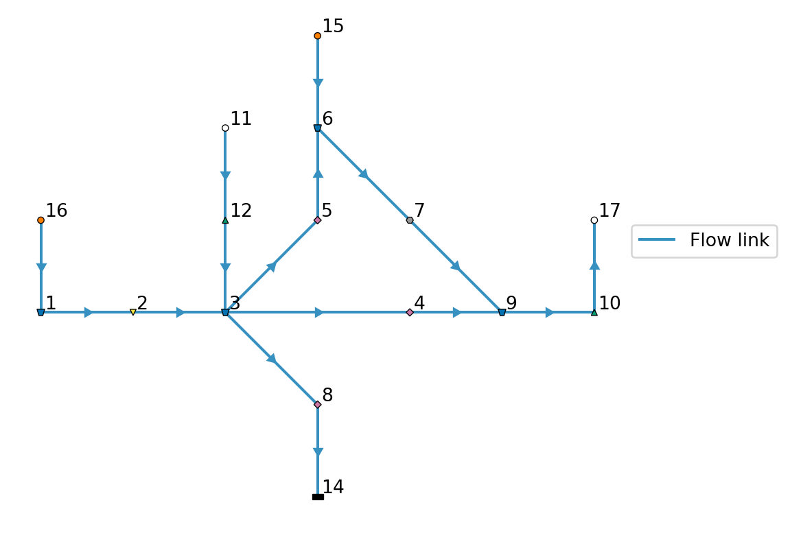
Write the model to a TOML and GeoPackage:
toml_path = datadir / "basic/ribasim.toml"
model.write(toml_path)PosixPath('data/basic/ribasim.toml')1.1 Running a model
Now run the model:
run_ribasim(toml_path)┌ Info: Starting a Ribasim simulation at 2026-02-02T10:55:14.186.
│ toml_path = "data/basic/ribasim.toml"
│ ribasim_version = "2026.1.0-rc1"
│ starttime = 2020-01-01T00:00:00
│ endtime = 2021-01-01T00:00:00
└ threads = 1
Simulating 0%| | ETA: N/A
Simulating 2%|▉ | ETA: 0:40:49
Simulating 4%|█▌ | ETA: 0:21:25
Simulating 6%|██▍ | ETA: 0:13:52
Simulating 8%|███▍ | ETA: 0:09:13
Simulating 11%|████▌ | ETA: 0:06:45
Simulating 14%|█████▋ | ETA: 0:05:09
Simulating 18%|███████ | ETA: 0:04:01
Simulating 21%|████████▌ | ETA: 0:03:09
Simulating 25%|██████████▏ | ETA: 0:02:30
Simulating 30%|████████████ | ETA: 0:01:59
Simulating 36%|██████████████▌ | ETA: 0:01:30
Simulating 47%|██████████████████▊ | ETA: 0:00:58
Simulating 53%|█████████████████████▎ | ETA: 0:00:45
Simulating 64%|█████████████████████████▋ | ETA: 0:00:29
Simulating 77%|██████████████████████████████▋ | ETA: 0:00:16
Simulating 92%|████████████████████████████████████▊ | ETA: 0:00:05
Simulating 100%|████████████████████████████████████████| Time: 0:00:51
[ Info: Computation time: 24 seconds, 878 milliseconds
[ Info: The model finished successfully at 2026-02-02T10:58:03.772.You can also open a terminal and run it from there. For example, to run the basic model, input:
ribasim basic/ribasim.tomlAfter running the model, read back the results:
df_basin = pd.read_feather(datadir / "basic/results/basin.arrow")
df_basin_wide = df_basin.pivot_table(
index="time", columns="node_id", values=["storage", "level"]
)
ax = df_basin_wide["level"].plot()
ax.set_ylabel("level [m]");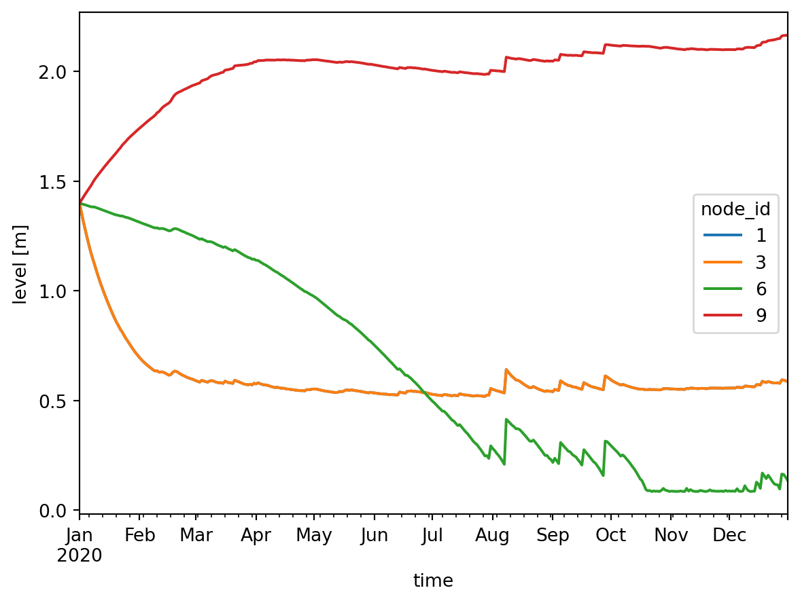
df_flow = pd.read_feather(datadir / "basic/results/flow.arrow")
df_flow["link"] = list(zip(df_flow.from_node_id, df_flow.to_node_id))
df_flow["flow_m3d"] = df_flow.flow_rate * 86400
ax = df_flow.pivot_table(index="time", columns="link", values="flow_m3d").plot()
ax.legend(bbox_to_anchor=(1.3, 1), title="Link")
ax.set_ylabel("flow [m³day⁻¹]");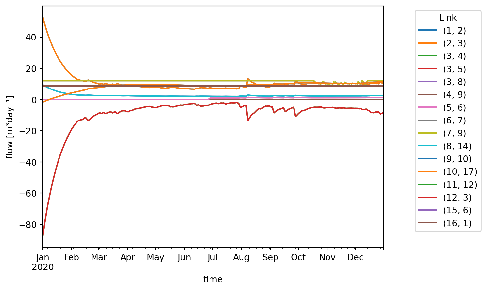
2 Model with discrete control
The model constructed below consists of a single basin which slowly drains through a TabulatedRatingCurve, but is held within a range by two connected pumps. These two pumps together behave like a reversible pump. When pumping can be done in only one direction, and the other direction is only possible under gravity, use an Outlet for that direction.
Setup the basins:
model = Model(
starttime="2020-01-01",
endtime="2021-01-01",
crs="EPSG:4326",
solver=Solver(abstol=1e-6, reltol=1e-5),
)model.basin.add(
Node(1, Point(0.0, 0.0)),
[
basin.Profile(area=[1000.0, 1000.0], level=[0.0, 1.0]),
basin.State(level=[20.0]),
basin.Time(time=["2020-01-01", "2020-07-01"], precipitation=[0.0, 3e-6]),
],
)Basin #1Setup the discrete control:
model.discrete_control.add(
Node(7, Point(1.0, 0.0)),
[
discrete_control.Variable(
compound_variable_id=1,
listen_node_id=1,
variable=["level"],
),
discrete_control.Condition(
compound_variable_id=1,
condition_id=[1, 2],
# min, max
threshold_high=[5.0, 15.0],
),
discrete_control.Logic(
truth_state=["FF", "TF", "TT"],
control_state=["in", "none", "out"],
),
],
)DiscreteControl #7The above control logic can be summarized as follows:
- If the level is above the maximum, activate the control state “out”;
- If the level is below the minimum, active the control state “in”;
- Otherwise activate the control state “none”.
Setup the pump:
model.pump.add(
Node(2, Point(1.0, 1.0)),
[pump.Static(control_state=["none", "in", "out"], flow_rate=[0.0, 2e-3, 0.0])],
)
model.pump.add(
Node(3, Point(1.0, -1.0)),
[pump.Static(control_state=["none", "in", "out"], flow_rate=[0.0, 0.0, 2e-3])],
)Pump #3The pump data defines the following:
| Control state | Pump #2 flow rate (m/s) | Pump #3 flow rate (m/s) |
|---|---|---|
| “none” | 0.0 | 0.0 |
| “in” | 2e-3 | 0.0 |
| “out” | 0.0 | 2e-3 |
Setup the level boundary:
model.level_boundary.add(
Node(4, Point(2.0, 0.0)), [level_boundary.Static(level=[10.0])]
)LevelBoundary #4Setup the rating curve:
model.tabulated_rating_curve.add(
Node(5, Point(-1.0, 0.0)),
[tabulated_rating_curve.Static(level=[2.0, 15.0], flow_rate=[0.0, 2e-3])],
)TabulatedRatingCurve #5Setup the terminal:
model.terminal.add(Node(6, Point(-2.0, 0.0)))Terminal #6Setup links:
model.link.add(model.basin[1], model.pump[3])
model.link.add(model.pump[3], model.level_boundary[4])
model.link.add(model.level_boundary[4], model.pump[2])
model.link.add(model.pump[2], model.basin[1])
model.link.add(model.basin[1], model.tabulated_rating_curve[5])
model.link.add(model.tabulated_rating_curve[5], model.terminal[6])
model.link.add(model.discrete_control[7], model.pump[2])
model.link.add(model.discrete_control[7], model.pump[3])Let’s take a look at the model:
model.plot()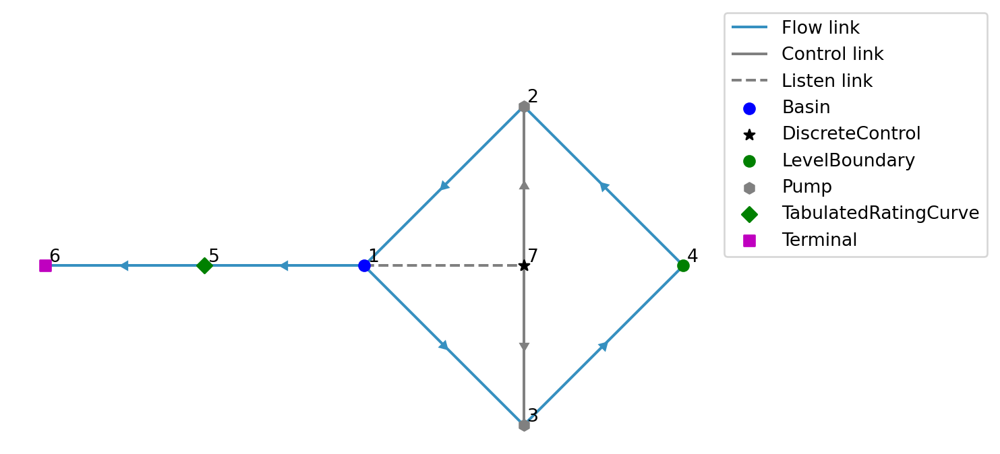
Listen links are plotted with a dashed line since they are not present in the “Link / static” schema but only in the “Control / condition” schema.
datadir = Path("data")
model.write(datadir / "level_range/ribasim.toml")PosixPath('data/level_range/ribasim.toml')Now run the model.
run_ribasim(datadir / "level_range/ribasim.toml")┌ Info: Starting a Ribasim simulation at 2026-02-02T10:58:05.628.
│ toml_path = "data/level_range/ribasim.toml"
│ ribasim_version = "2026.1.0-rc1"
│ starttime = 2020-01-01T00:00:00
│ endtime = 2021-01-01T00:00:00
└ threads = 1
Simulating 0%| | ETA: N/A
Simulating 17%|██████▋ | ETA: 0:00:04
Simulating 44%|█████████████████▋ | ETA: 0:00:01
Simulating 65%|██████████████████████████▏ | ETA: 0:00:00
Simulating 66%|██████████████████████████▌ | ETA: 0:00:00
Simulating 66%|██████████████████████████▌ | ETA: 0:00:00
Simulating 66%|██████████████████████████▋ | ETA: 0:00:00
Simulating 66%|██████████████████████████▋ | ETA: 0:00:00
Simulating 66%|██████████████████████████▋ | ETA: 0:00:00
Simulating 67%|██████████████████████████▋ | ETA: 0:00:00
Simulating 67%|██████████████████████████▋ | ETA: 0:00:00
Simulating 67%|██████████████████████████▋ | ETA: 0:00:00
Simulating 67%|██████████████████████████▋ | ETA: 0:00:00
Simulating 67%|██████████████████████████▋ | ETA: 0:00:00
Simulating 67%|██████████████████████████▋ | ETA: 0:00:00
Simulating 67%|██████████████████████████▋ | ETA: 0:00:00
Simulating 67%|██████████████████████████▊ | ETA: 0:00:00
Simulating 67%|██████████████████████████▊ | ETA: 0:00:00
Simulating 67%|██████████████████████████▊ | ETA: 0:00:00
Simulating 67%|██████████████████████████▊ | ETA: 0:00:00
Simulating 67%|██████████████████████████▊ | ETA: 0:00:00
Simulating 67%|██████████████████████████▊ | ETA: 0:00:00
Simulating 67%|██████████████████████████▊ | ETA: 0:00:00
Simulating 67%|██████████████████████████▊ | ETA: 0:00:00
Simulating 67%|██████████████████████████▊ | ETA: 0:00:00
Simulating 67%|██████████████████████████▉ | ETA: 0:00:00
Simulating 67%|██████████████████████████▉ | ETA: 0:00:00
Simulating 67%|██████████████████████████▉ | ETA: 0:00:00
Simulating 67%|██████████████████████████▉ | ETA: 0:00:00
Simulating 67%|██████████████████████████▉ | ETA: 0:00:00
Simulating 67%|██████████████████████████▉ | ETA: 0:00:00
Simulating 67%|██████████████████████████▉ | ETA: 0:00:00
Simulating 67%|██████████████████████████▉ | ETA: 0:00:00
Simulating 67%|██████████████████████████▉ | ETA: 0:00:00
Simulating 67%|██████████████████████████▉ | ETA: 0:00:00
Simulating 67%|███████████████████████████ | ETA: 0:00:00
Simulating 67%|███████████████████████████ | ETA: 0:00:00
Simulating 67%|███████████████████████████ | ETA: 0:00:00
Simulating 67%|███████████████████████████ | ETA: 0:00:00
Simulating 67%|███████████████████████████ | ETA: 0:00:00
Simulating 67%|███████████████████████████ | ETA: 0:00:00
Simulating 67%|███████████████████████████ | ETA: 0:00:00
Simulating 68%|███████████████████████████ | ETA: 0:00:00
Simulating 68%|███████████████████████████ | ETA: 0:00:00
Simulating 68%|███████████████████████████ | ETA: 0:00:00
Simulating 68%|███████████████████████████ | ETA: 0:00:01
Simulating 68%|███████████████████████████ | ETA: 0:00:01
Simulating 68%|███████████████████████████ | ETA: 0:00:01
Simulating 68%|███████████████████████████▏ | ETA: 0:00:01
Simulating 68%|███████████████████████████▏ | ETA: 0:00:01
Simulating 68%|███████████████████████████▏ | ETA: 0:00:01
Simulating 68%|███████████████████████████▏ | ETA: 0:00:01
Simulating 68%|███████████████████████████▏ | ETA: 0:00:01
Simulating 68%|███████████████████████████▏ | ETA: 0:00:01
Simulating 68%|███████████████████████████▏ | ETA: 0:00:01
Simulating 68%|███████████████████████████▏ | ETA: 0:00:01
Simulating 68%|███████████████████████████▏ | ETA: 0:00:01
Simulating 68%|███████████████████████████▏ | ETA: 0:00:01
Simulating 68%|███████████████████████████▎ | ETA: 0:00:01
Simulating 68%|███████████████████████████▎ | ETA: 0:00:01
Simulating 68%|███████████████████████████▎ | ETA: 0:00:01
Simulating 68%|███████████████████████████▎ | ETA: 0:00:01
Simulating 68%|███████████████████████████▎ | ETA: 0:00:01
Simulating 68%|███████████████████████████▎ | ETA: 0:00:01
Simulating 68%|███████████████████████████▎ | ETA: 0:00:01
Simulating 68%|███████████████████████████▍ | ETA: 0:00:01
Simulating 68%|███████████████████████████▍ | ETA: 0:00:01
Simulating 68%|███████████████████████████▍ | ETA: 0:00:01
Simulating 68%|███████████████████████████▍ | ETA: 0:00:01
Simulating 68%|███████████████████████████▍ | ETA: 0:00:01
Simulating 68%|███████████████████████████▍ | ETA: 0:00:01
Simulating 69%|███████████████████████████▍ | ETA: 0:00:01
Simulating 69%|███████████████████████████▍ | ETA: 0:00:01
Simulating 69%|███████████████████████████▌ | ETA: 0:00:01
Simulating 69%|███████████████████████████▌ | ETA: 0:00:01
Simulating 69%|███████████████████████████▌ | ETA: 0:00:01
Simulating 69%|███████████████████████████▌ | ETA: 0:00:01
Simulating 69%|███████████████████████████▌ | ETA: 0:00:01
Simulating 69%|███████████████████████████▌ | ETA: 0:00:01
Simulating 69%|███████████████████████████▌ | ETA: 0:00:01
Simulating 69%|███████████████████████████▋ | ETA: 0:00:01
Simulating 69%|███████████████████████████▋ | ETA: 0:00:01
Simulating 69%|███████████████████████████▋ | ETA: 0:00:01
Simulating 69%|███████████████████████████▋ | ETA: 0:00:01
Simulating 69%|███████████████████████████▋ | ETA: 0:00:01
Simulating 69%|███████████████████████████▋ | ETA: 0:00:01
Simulating 69%|███████████████████████████▋ | ETA: 0:00:01
Simulating 69%|███████████████████████████▊ | ETA: 0:00:01
Simulating 69%|███████████████████████████▊ | ETA: 0:00:01
Simulating 69%|███████████████████████████▊ | ETA: 0:00:01
Simulating 69%|███████████████████████████▊ | ETA: 0:00:01
Simulating 69%|███████████████████████████▊ | ETA: 0:00:01
Simulating 69%|███████████████████████████▊ | ETA: 0:00:01
Simulating 70%|███████████████████████████▉ | ETA: 0:00:01
Simulating 70%|███████████████████████████▉ | ETA: 0:00:01
Simulating 70%|███████████████████████████▉ | ETA: 0:00:01
Simulating 70%|███████████████████████████▉ | ETA: 0:00:01
Simulating 70%|███████████████████████████▉ | ETA: 0:00:01
Simulating 70%|███████████████████████████▉ | ETA: 0:00:01
Simulating 70%|███████████████████████████▉ | ETA: 0:00:01
Simulating 70%|████████████████████████████ | ETA: 0:00:01
Simulating 70%|████████████████████████████ | ETA: 0:00:01
Simulating 70%|████████████████████████████ | ETA: 0:00:01
Simulating 70%|████████████████████████████ | ETA: 0:00:01
Simulating 70%|████████████████████████████ | ETA: 0:00:01
Simulating 70%|████████████████████████████ | ETA: 0:00:01
Simulating 70%|████████████████████████████▏ | ETA: 0:00:01
Simulating 70%|████████████████████████████▏ | ETA: 0:00:01
Simulating 70%|████████████████████████████▏ | ETA: 0:00:01
Simulating 70%|████████████████████████████▏ | ETA: 0:00:01
Simulating 70%|████████████████████████████▏ | ETA: 0:00:01
Simulating 70%|████████████████████████████▏ | ETA: 0:00:01
Simulating 70%|████████████████████████████▎ | ETA: 0:00:01
Simulating 71%|████████████████████████████▎ | ETA: 0:00:01
Simulating 71%|████████████████████████████▎ | ETA: 0:00:01
Simulating 71%|████████████████████████████▎ | ETA: 0:00:01
Simulating 71%|████████████████████████████▎ | ETA: 0:00:01
Simulating 71%|████████████████████████████▎ | ETA: 0:00:01
Simulating 71%|████████████████████████████▍ | ETA: 0:00:01
Simulating 71%|████████████████████████████▍ | ETA: 0:00:01
Simulating 71%|████████████████████████████▍ | ETA: 0:00:01
Simulating 71%|████████████████████████████▍ | ETA: 0:00:01
Simulating 71%|████████████████████████████▍ | ETA: 0:00:01
Simulating 71%|████████████████████████████▍ | ETA: 0:00:01
Simulating 71%|████████████████████████████▍ | ETA: 0:00:01
Simulating 71%|████████████████████████████▍ | ETA: 0:00:01
Simulating 71%|████████████████████████████▍ | ETA: 0:00:01
Simulating 71%|████████████████████████████▌ | ETA: 0:00:01
Simulating 71%|████████████████████████████▌ | ETA: 0:00:01
Simulating 71%|████████████████████████████▌ | ETA: 0:00:01
Simulating 71%|████████████████████████████▌ | ETA: 0:00:01
Simulating 71%|████████████████████████████▌ | ETA: 0:00:01
Simulating 71%|████████████████████████████▌ | ETA: 0:00:01
Simulating 71%|████████████████████████████▋ | ETA: 0:00:01
Simulating 71%|████████████████████████████▋ | ETA: 0:00:01
Simulating 72%|████████████████████████████▋ | ETA: 0:00:01
Simulating 72%|████████████████████████████▋ | ETA: 0:00:01
Simulating 72%|████████████████████████████▋ | ETA: 0:00:01
Simulating 72%|████████████████████████████▋ | ETA: 0:00:01
Simulating 72%|████████████████████████████▊ | ETA: 0:00:01
Simulating 72%|████████████████████████████▊ | ETA: 0:00:01
Simulating 72%|████████████████████████████▊ | ETA: 0:00:01
Simulating 72%|████████████████████████████▊ | ETA: 0:00:01
Simulating 72%|████████████████████████████▊ | ETA: 0:00:01
Simulating 72%|████████████████████████████▊ | ETA: 0:00:01
Simulating 72%|████████████████████████████▊ | ETA: 0:00:01
Simulating 72%|████████████████████████████▊ | ETA: 0:00:01
Simulating 72%|████████████████████████████▉ | ETA: 0:00:01
Simulating 72%|████████████████████████████▉ | ETA: 0:00:01
Simulating 72%|████████████████████████████▉ | ETA: 0:00:01
Simulating 72%|████████████████████████████▉ | ETA: 0:00:01
Simulating 72%|████████████████████████████▉ | ETA: 0:00:01
Simulating 72%|████████████████████████████▉ | ETA: 0:00:01
Simulating 72%|████████████████████████████▉ | ETA: 0:00:01
Simulating 72%|████████████████████████████▉ | ETA: 0:00:01
Simulating 72%|████████████████████████████▉ | ETA: 0:00:01
Simulating 72%|█████████████████████████████ | ETA: 0:00:01
Simulating 72%|█████████████████████████████ | ETA: 0:00:01
Simulating 72%|█████████████████████████████ | ETA: 0:00:01
Simulating 73%|█████████████████████████████ | ETA: 0:00:01
Simulating 73%|█████████████████████████████ | ETA: 0:00:01
Simulating 73%|█████████████████████████████▏ | ETA: 0:00:01
Simulating 73%|█████████████████████████████▏ | ETA: 0:00:01
Simulating 73%|█████████████████████████████▏ | ETA: 0:00:01
Simulating 73%|█████████████████████████████▏ | ETA: 0:00:01
Simulating 73%|█████████████████████████████▏ | ETA: 0:00:01
Simulating 73%|█████████████████████████████▏ | ETA: 0:00:01
Simulating 73%|█████████████████████████████▎ | ETA: 0:00:01
Simulating 73%|█████████████████████████████▎ | ETA: 0:00:01
Simulating 73%|█████████████████████████████▎ | ETA: 0:00:01
Simulating 73%|█████████████████████████████▎ | ETA: 0:00:01
Simulating 73%|█████████████████████████████▎ | ETA: 0:00:01
Simulating 73%|█████████████████████████████▎ | ETA: 0:00:01
Simulating 73%|█████████████████████████████▍ | ETA: 0:00:01
Simulating 73%|█████████████████████████████▍ | ETA: 0:00:01
Simulating 73%|█████████████████████████████▍ | ETA: 0:00:01
Simulating 73%|█████████████████████████████▍ | ETA: 0:00:01
Simulating 73%|█████████████████████████████▍ | ETA: 0:00:01
Simulating 73%|█████████████████████████████▍ | ETA: 0:00:01
Simulating 74%|█████████████████████████████▍ | ETA: 0:00:01
Simulating 74%|█████████████████████████████▌ | ETA: 0:00:01
Simulating 74%|█████████████████████████████▌ | ETA: 0:00:01
Simulating 74%|█████████████████████████████▌ | ETA: 0:00:01
Simulating 74%|█████████████████████████████▌ | ETA: 0:00:01
Simulating 74%|█████████████████████████████▌ | ETA: 0:00:01
Simulating 74%|█████████████████████████████▋ | ETA: 0:00:01
Simulating 74%|█████████████████████████████▋ | ETA: 0:00:01
Simulating 74%|█████████████████████████████▋ | ETA: 0:00:01
Simulating 74%|█████████████████████████████▋ | ETA: 0:00:01
Simulating 74%|█████████████████████████████▋ | ETA: 0:00:01
Simulating 74%|█████████████████████████████▊ | ETA: 0:00:01
Simulating 74%|█████████████████████████████▊ | ETA: 0:00:01
Simulating 74%|█████████████████████████████▊ | ETA: 0:00:01
Simulating 74%|█████████████████████████████▊ | ETA: 0:00:01
Simulating 74%|█████████████████████████████▊ | ETA: 0:00:01
Simulating 75%|█████████████████████████████▉ | ETA: 0:00:01
Simulating 75%|█████████████████████████████▉ | ETA: 0:00:01
Simulating 75%|█████████████████████████████▉ | ETA: 0:00:01
Simulating 75%|█████████████████████████████▉ | ETA: 0:00:01
Simulating 75%|█████████████████████████████▉ | ETA: 0:00:01
Simulating 75%|█████████████████████████████▉ | ETA: 0:00:01
Simulating 75%|█████████████████████████████▉ | ETA: 0:00:01
Simulating 75%|█████████████████████████████▉ | ETA: 0:00:01
Simulating 75%|██████████████████████████████ | ETA: 0:00:01
Simulating 75%|██████████████████████████████ | ETA: 0:00:01
Simulating 75%|██████████████████████████████ | ETA: 0:00:01
Simulating 75%|██████████████████████████████ | ETA: 0:00:01
Simulating 75%|██████████████████████████████ | ETA: 0:00:01
Simulating 75%|██████████████████████████████▏ | ETA: 0:00:01
Simulating 75%|██████████████████████████████▏ | ETA: 0:00:01
Simulating 75%|██████████████████████████████▏ | ETA: 0:00:01
Simulating 75%|██████████████████████████████▏ | ETA: 0:00:01
Simulating 75%|██████████████████████████████▎ | ETA: 0:00:01
Simulating 76%|██████████████████████████████▎ | ETA: 0:00:01
Simulating 76%|██████████████████████████████▎ | ETA: 0:00:01
Simulating 76%|██████████████████████████████▎ | ETA: 0:00:01
Simulating 76%|██████████████████████████████▎ | ETA: 0:00:01
Simulating 76%|██████████████████████████████▍ | ETA: 0:00:01
Simulating 76%|██████████████████████████████▍ | ETA: 0:00:01
Simulating 76%|██████████████████████████████▍ | ETA: 0:00:01
Simulating 76%|██████████████████████████████▍ | ETA: 0:00:01
Simulating 76%|██████████████████████████████▌ | ETA: 0:00:01
Simulating 76%|██████████████████████████████▌ | ETA: 0:00:01
Simulating 76%|██████████████████████████████▌ | ETA: 0:00:01
Simulating 76%|██████████████████████████████▌ | ETA: 0:00:01
Simulating 76%|██████████████████████████████▌ | ETA: 0:00:01
Simulating 76%|██████████████████████████████▋ | ETA: 0:00:01
Simulating 77%|██████████████████████████████▋ | ETA: 0:00:01
Simulating 77%|██████████████████████████████▋ | ETA: 0:00:01
Simulating 77%|██████████████████████████████▋ | ETA: 0:00:01
Simulating 77%|██████████████████████████████▊ | ETA: 0:00:01
Simulating 77%|██████████████████████████████▊ | ETA: 0:00:01
Simulating 77%|██████████████████████████████▊ | ETA: 0:00:01
Simulating 77%|██████████████████████████████▊ | ETA: 0:00:01
Simulating 77%|██████████████████████████████▉ | ETA: 0:00:01
Simulating 77%|██████████████████████████████▉ | ETA: 0:00:01
Simulating 77%|██████████████████████████████▉ | ETA: 0:00:01
Simulating 77%|██████████████████████████████▉ | ETA: 0:00:01
Simulating 77%|███████████████████████████████ | ETA: 0:00:01
Simulating 77%|███████████████████████████████ | ETA: 0:00:01
Simulating 78%|███████████████████████████████ | ETA: 0:00:01
Simulating 78%|███████████████████████████████ | ETA: 0:00:01
Simulating 78%|███████████████████████████████▏ | ETA: 0:00:01
Simulating 78%|███████████████████████████████▏ | ETA: 0:00:01
Simulating 78%|███████████████████████████████▏ | ETA: 0:00:01
Simulating 78%|███████████████████████████████▏ | ETA: 0:00:01
Simulating 78%|███████████████████████████████▏ | ETA: 0:00:01
Simulating 78%|███████████████████████████████▎ | ETA: 0:00:01
Simulating 78%|███████████████████████████████▎ | ETA: 0:00:01
Simulating 78%|███████████████████████████████▎ | ETA: 0:00:01
Simulating 78%|███████████████████████████████▍ | ETA: 0:00:01
Simulating 78%|███████████████████████████████▍ | ETA: 0:00:01
Simulating 78%|███████████████████████████████▍ | ETA: 0:00:01
Simulating 78%|███████████████████████████████▍ | ETA: 0:00:01
Simulating 79%|███████████████████████████████▍ | ETA: 0:00:01
Simulating 79%|███████████████████████████████▍ | ETA: 0:00:01
Simulating 79%|███████████████████████████████▌ | ETA: 0:00:01
Simulating 79%|███████████████████████████████▌ | ETA: 0:00:01
Simulating 79%|███████████████████████████████▌ | ETA: 0:00:01
Simulating 79%|███████████████████████████████▌ | ETA: 0:00:01
Simulating 79%|███████████████████████████████▋ | ETA: 0:00:01
Simulating 79%|███████████████████████████████▋ | ETA: 0:00:01
Simulating 79%|███████████████████████████████▋ | ETA: 0:00:01
Simulating 79%|███████████████████████████████▋ | ETA: 0:00:01
Simulating 79%|███████████████████████████████▊ | ETA: 0:00:01
Simulating 79%|███████████████████████████████▊ | ETA: 0:00:01
Simulating 79%|███████████████████████████████▊ | ETA: 0:00:01
Simulating 80%|███████████████████████████████▊ | ETA: 0:00:01
Simulating 80%|███████████████████████████████▉ | ETA: 0:00:01
Simulating 80%|███████████████████████████████▉ | ETA: 0:00:01
Simulating 80%|███████████████████████████████▉ | ETA: 0:00:01
Simulating 80%|████████████████████████████████ | ETA: 0:00:01
Simulating 80%|████████████████████████████████ | ETA: 0:00:01
Simulating 80%|████████████████████████████████ | ETA: 0:00:01
Simulating 80%|████████████████████████████████ | ETA: 0:00:01
Simulating 80%|████████████████████████████████▏ | ETA: 0:00:01
Simulating 80%|████████████████████████████████▏ | ETA: 0:00:01
Simulating 80%|████████████████████████████████▏ | ETA: 0:00:01
Simulating 80%|████████████████████████████████▎ | ETA: 0:00:01
Simulating 81%|████████████████████████████████▎ | ETA: 0:00:01
Simulating 81%|████████████████████████████████▎ | ETA: 0:00:01
Simulating 81%|████████████████████████████████▎ | ETA: 0:00:01
Simulating 81%|████████████████████████████████▍ | ETA: 0:00:01
Simulating 81%|████████████████████████████████▍ | ETA: 0:00:01
Simulating 81%|████████████████████████████████▍ | ETA: 0:00:01
Simulating 81%|████████████████████████████████▌ | ETA: 0:00:01
Simulating 81%|████████████████████████████████▌ | ETA: 0:00:01
Simulating 81%|████████████████████████████████▌ | ETA: 0:00:01
Simulating 81%|████████████████████████████████▌ | ETA: 0:00:01
Simulating 81%|████████████████████████████████▋ | ETA: 0:00:01
Simulating 82%|████████████████████████████████▋ | ETA: 0:00:01
Simulating 82%|████████████████████████████████▋ | ETA: 0:00:01
Simulating 82%|████████████████████████████████▊ | ETA: 0:00:01
Simulating 82%|████████████████████████████████▊ | ETA: 0:00:01
Simulating 82%|████████████████████████████████▊ | ETA: 0:00:01
Simulating 82%|████████████████████████████████▉ | ETA: 0:00:01
Simulating 82%|████████████████████████████████▉ | ETA: 0:00:01
Simulating 82%|████████████████████████████████▉ | ETA: 0:00:01
Simulating 82%|████████████████████████████████▉ | ETA: 0:00:01
Simulating 82%|█████████████████████████████████ | ETA: 0:00:01
Simulating 82%|█████████████████████████████████ | ETA: 0:00:01
Simulating 83%|█████████████████████████████████ | ETA: 0:00:01
Simulating 83%|█████████████████████████████████ | ETA: 0:00:01
Simulating 83%|█████████████████████████████████▏ | ETA: 0:00:01
Simulating 83%|█████████████████████████████████▏ | ETA: 0:00:01
Simulating 83%|█████████████████████████████████▏ | ETA: 0:00:01
Simulating 83%|█████████████████████████████████▏ | ETA: 0:00:01
Simulating 83%|█████████████████████████████████▎ | ETA: 0:00:01
Simulating 83%|█████████████████████████████████▎ | ETA: 0:00:01
Simulating 83%|█████████████████████████████████▎ | ETA: 0:00:01
Simulating 83%|█████████████████████████████████▎ | ETA: 0:00:01
Simulating 83%|█████████████████████████████████▎ | ETA: 0:00:01
Simulating 83%|█████████████████████████████████▍ | ETA: 0:00:01
Simulating 83%|█████████████████████████████████▍ | ETA: 0:00:01
Simulating 83%|█████████████████████████████████▍ | ETA: 0:00:01
Simulating 84%|█████████████████████████████████▍ | ETA: 0:00:01
Simulating 84%|█████████████████████████████████▍ | ETA: 0:00:01
Simulating 84%|█████████████████████████████████▌ | ETA: 0:00:01
Simulating 84%|█████████████████████████████████▌ | ETA: 0:00:01
Simulating 84%|█████████████████████████████████▌ | ETA: 0:00:01
Simulating 84%|█████████████████████████████████▌ | ETA: 0:00:01
Simulating 84%|█████████████████████████████████▋ | ETA: 0:00:01
Simulating 84%|█████████████████████████████████▋ | ETA: 0:00:01
Simulating 84%|█████████████████████████████████▋ | ETA: 0:00:01
Simulating 84%|█████████████████████████████████▋ | ETA: 0:00:01
Simulating 84%|█████████████████████████████████▊ | ETA: 0:00:01
Simulating 84%|█████████████████████████████████▊ | ETA: 0:00:01
Simulating 84%|█████████████████████████████████▊ | ETA: 0:00:01
Simulating 84%|█████████████████████████████████▊ | ETA: 0:00:01
Simulating 85%|█████████████████████████████████▉ | ETA: 0:00:01
Simulating 85%|█████████████████████████████████▉ | ETA: 0:00:00
Simulating 85%|█████████████████████████████████▉ | ETA: 0:00:00
Simulating 85%|█████████████████████████████████▉ | ETA: 0:00:00
Simulating 85%|██████████████████████████████████ | ETA: 0:00:00
Simulating 85%|██████████████████████████████████ | ETA: 0:00:00
Simulating 85%|██████████████████████████████████ | ETA: 0:00:00
Simulating 85%|██████████████████████████████████ | ETA: 0:00:00
Simulating 85%|██████████████████████████████████▏ | ETA: 0:00:00
Simulating 85%|██████████████████████████████████▏ | ETA: 0:00:00
Simulating 85%|██████████████████████████████████▏ | ETA: 0:00:00
Simulating 85%|██████████████████████████████████▏ | ETA: 0:00:00
Simulating 86%|██████████████████████████████████▎ | ETA: 0:00:00
Simulating 86%|██████████████████████████████████▎ | ETA: 0:00:00
Simulating 86%|██████████████████████████████████▎ | ETA: 0:00:00
Simulating 86%|██████████████████████████████████▍ | ETA: 0:00:00
Simulating 86%|██████████████████████████████████▍ | ETA: 0:00:00
Simulating 86%|██████████████████████████████████▍ | ETA: 0:00:00
Simulating 86%|██████████████████████████████████▌ | ETA: 0:00:00
Simulating 86%|██████████████████████████████████▌ | ETA: 0:00:00
Simulating 86%|██████████████████████████████████▌ | ETA: 0:00:00
Simulating 87%|██████████████████████████████████▋ | ETA: 0:00:00
Simulating 87%|██████████████████████████████████▋ | ETA: 0:00:00
Simulating 87%|██████████████████████████████████▊ | ETA: 0:00:00
Simulating 87%|██████████████████████████████████▊ | ETA: 0:00:00
Simulating 87%|██████████████████████████████████▊ | ETA: 0:00:00
Simulating 87%|██████████████████████████████████▉ | ETA: 0:00:00
Simulating 87%|██████████████████████████████████▉ | ETA: 0:00:00
Simulating 87%|██████████████████████████████████▉ | ETA: 0:00:00
Simulating 87%|███████████████████████████████████ | ETA: 0:00:00
Simulating 88%|███████████████████████████████████ | ETA: 0:00:00
Simulating 88%|███████████████████████████████████ | ETA: 0:00:00
Simulating 88%|███████████████████████████████████▏ | ETA: 0:00:00
Simulating 88%|███████████████████████████████████▏ | ETA: 0:00:00
Simulating 88%|███████████████████████████████████▏ | ETA: 0:00:00
Simulating 88%|███████████████████████████████████▎ | ETA: 0:00:00
Simulating 88%|███████████████████████████████████▎ | ETA: 0:00:00
Simulating 88%|███████████████████████████████████▍ | ETA: 0:00:00
Simulating 88%|███████████████████████████████████▍ | ETA: 0:00:00
Simulating 89%|███████████████████████████████████▍ | ETA: 0:00:00
Simulating 89%|███████████████████████████████████▌ | ETA: 0:00:00
Simulating 89%|███████████████████████████████████▌ | ETA: 0:00:00
Simulating 89%|███████████████████████████████████▌ | ETA: 0:00:00
Simulating 89%|███████████████████████████████████▋ | ETA: 0:00:00
Simulating 89%|███████████████████████████████████▋ | ETA: 0:00:00
Simulating 89%|███████████████████████████████████▊ | ETA: 0:00:00
Simulating 89%|███████████████████████████████████▊ | ETA: 0:00:00
Simulating 89%|███████████████████████████████████▊ | ETA: 0:00:00
Simulating 90%|███████████████████████████████████▉ | ETA: 0:00:00
Simulating 90%|███████████████████████████████████▉ | ETA: 0:00:00
Simulating 90%|███████████████████████████████████▉ | ETA: 0:00:00
Simulating 90%|███████████████████████████████████▉ | ETA: 0:00:00
Simulating 90%|████████████████████████████████████ | ETA: 0:00:00
Simulating 90%|████████████████████████████████████ | ETA: 0:00:00
Simulating 90%|████████████████████████████████████ | ETA: 0:00:00
Simulating 90%|████████████████████████████████████▏ | ETA: 0:00:00
Simulating 90%|████████████████████████████████████▏ | ETA: 0:00:00
Simulating 91%|████████████████████████████████████▎ | ETA: 0:00:00
Simulating 91%|████████████████████████████████████▎ | ETA: 0:00:00
Simulating 91%|████████████████████████████████████▍ | ETA: 0:00:00
Simulating 91%|████████████████████████████████████▍ | ETA: 0:00:00
Simulating 91%|████████████████████████████████████▍ | ETA: 0:00:00
Simulating 91%|████████████████████████████████████▌ | ETA: 0:00:00
Simulating 91%|████████████████████████████████████▌ | ETA: 0:00:00
Simulating 91%|████████████████████████████████████▋ | ETA: 0:00:00
Simulating 92%|████████████████████████████████████▋ | ETA: 0:00:00
Simulating 92%|████████████████████████████████████▊ | ETA: 0:00:00
Simulating 92%|████████████████████████████████████▊ | ETA: 0:00:00
Simulating 92%|████████████████████████████████████▊ | ETA: 0:00:00
Simulating 92%|████████████████████████████████████▉ | ETA: 0:00:00
Simulating 92%|████████████████████████████████████▉ | ETA: 0:00:00
Simulating 92%|█████████████████████████████████████ | ETA: 0:00:00
Simulating 93%|█████████████████████████████████████ | ETA: 0:00:00
Simulating 93%|█████████████████████████████████████▏ | ETA: 0:00:00
Simulating 93%|█████████████████████████████████████▏ | ETA: 0:00:00
Simulating 93%|█████████████████████████████████████▏ | ETA: 0:00:00
Simulating 93%|█████████████████████████████████████▎ | ETA: 0:00:00
Simulating 93%|█████████████████████████████████████▎ | ETA: 0:00:00
Simulating 93%|█████████████████████████████████████▍ | ETA: 0:00:00
Simulating 93%|█████████████████████████████████████▍ | ETA: 0:00:00
Simulating 94%|█████████████████████████████████████▌ | ETA: 0:00:00
Simulating 94%|█████████████████████████████████████▌ | ETA: 0:00:00
Simulating 94%|█████████████████████████████████████▌ | ETA: 0:00:00
Simulating 94%|█████████████████████████████████████▋ | ETA: 0:00:00
Simulating 94%|█████████████████████████████████████▋ | ETA: 0:00:00
Simulating 94%|█████████████████████████████████████▊ | ETA: 0:00:00
Simulating 94%|█████████████████████████████████████▊ | ETA: 0:00:00
Simulating 94%|█████████████████████████████████████▊ | ETA: 0:00:00
Simulating 95%|█████████████████████████████████████▉ | ETA: 0:00:00
Simulating 95%|█████████████████████████████████████▉ | ETA: 0:00:00
Simulating 95%|█████████████████████████████████████▉ | ETA: 0:00:00
Simulating 95%|█████████████████████████████████████▉ | ETA: 0:00:00
Simulating 95%|██████████████████████████████████████ | ETA: 0:00:00
Simulating 95%|██████████████████████████████████████ | ETA: 0:00:00
Simulating 95%|██████████████████████████████████████▏ | ETA: 0:00:00
Simulating 95%|██████████████████████████████████████▏ | ETA: 0:00:00
Simulating 96%|██████████████████████████████████████▎ | ETA: 0:00:00
Simulating 96%|██████████████████████████████████████▎ | ETA: 0:00:00
Simulating 96%|██████████████████████████████████████▍ | ETA: 0:00:00
Simulating 96%|██████████████████████████████████████▍ | ETA: 0:00:00
Simulating 96%|██████████████████████████████████████▌ | ETA: 0:00:00
Simulating 96%|██████████████████████████████████████▌ | ETA: 0:00:00
Simulating 96%|██████████████████████████████████████▌ | ETA: 0:00:00
Simulating 97%|██████████████████████████████████████▋ | ETA: 0:00:00
Simulating 97%|██████████████████████████████████████▋ | ETA: 0:00:00
Simulating 97%|██████████████████████████████████████▋ | ETA: 0:00:00
Simulating 97%|██████████████████████████████████████▊ | ETA: 0:00:00
Simulating 97%|██████████████████████████████████████▊ | ETA: 0:00:00
Simulating 97%|██████████████████████████████████████▊ | ETA: 0:00:00
Simulating 97%|██████████████████████████████████████▊ | ETA: 0:00:00
Simulating 97%|██████████████████████████████████████▉ | ETA: 0:00:00
Simulating 97%|██████████████████████████████████████▉ | ETA: 0:00:00
Simulating 97%|███████████████████████████████████████ | ETA: 0:00:00
Simulating 98%|███████████████████████████████████████ | ETA: 0:00:00
Simulating 98%|███████████████████████████████████████▏| ETA: 0:00:00
Simulating 98%|███████████████████████████████████████▏| ETA: 0:00:00
Simulating 98%|███████████████████████████████████████▎| ETA: 0:00:00
Simulating 98%|███████████████████████████████████████▎| ETA: 0:00:00
Simulating 98%|███████████████████████████████████████▍| ETA: 0:00:00
Simulating 98%|███████████████████████████████████████▍| ETA: 0:00:00
Simulating 99%|███████████████████████████████████████▌| ETA: 0:00:00
Simulating 99%|███████████████████████████████████████▌| ETA: 0:00:00
Simulating 99%|███████████████████████████████████████▌| ETA: 0:00:00
Simulating 99%|███████████████████████████████████████▋| ETA: 0:00:00
Simulating 99%|███████████████████████████████████████▋| ETA: 0:00:00
Simulating 99%|███████████████████████████████████████▊| ETA: 0:00:00
Simulating 99%|███████████████████████████████████████▊| ETA: 0:00:00
Simulating 100%|███████████████████████████████████████▉| ETA: 0:00:00
Simulating 100%|███████████████████████████████████████▉| ETA: 0:00:00
Simulating 100%|████████████████████████████████████████| ETA: 0:00:00
Simulating 100%|████████████████████████████████████████| ETA: 0:00:00
Simulating 100%|████████████████████████████████████████| Time: 0:00:03
[ Info: Computation time: 3 seconds, 508 milliseconds
[ Info: The model finished successfully at 2026-02-02T10:58:15.520.After running the model, read back the results:
df_basin = pd.read_feather(datadir / "level_range/results/basin.arrow")
df_basin_wide = df_basin.pivot_table(
index="time", columns="node_id", values=["storage", "level"]
)
ax = df_basin_wide["level"].plot()
threshold_high = model.discrete_control.condition.df.threshold_high
ax.hlines(
threshold_high,
df_basin.time[0],
df_basin.time.max(),
lw=1,
ls="--",
color="k",
)
ax.set_yticks(threshold_high, ["min", "max"])
ax.set_ylabel("level")
plt.show()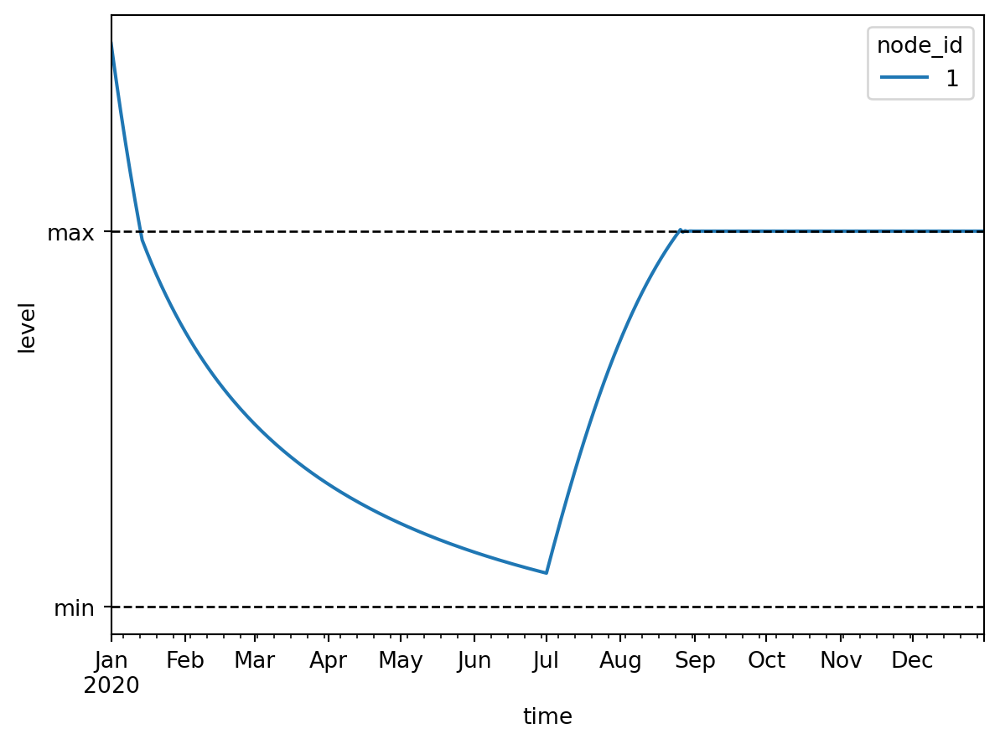
We see that in January the level of the basin is too high and thus water is pumped out until the maximum level of the desired range is reached. Then until May water flows out of the basin freely through the tabulated rating curve until the minimum level is reached. From this point until the start of July water is pumped into the basin in short bursts to stay within the desired range. At the start of July rain starts falling on the basin, which causes the basin level to rise until the maximum level. From this point onward water is pumped out of the basin in short bursts to stay within the desired range.
3 Model with PID control
Set up the model:
model = Model(starttime="2020-01-01", endtime="2020-12-01", crs="EPSG:4326")Setup the basins:
model.basin.add(
Node(2, Point(1.0, 0.0)),
[basin.Profile(area=[1000.0, 1000.0], level=[0.0, 1.0]), basin.State(level=[6.0])],
)Basin #2Setup the pump:
model.pump.add(
Node(3, Point(2.0, 0.5)),
[pump.Static(flow_rate=[0.0])], # Will be overwritten by PID controller
)Pump #3Setup the outlet:
model.outlet.add(
Node(6, Point(2.0, -0.5)),
[outlet.Static(flow_rate=[0.0])], # Will be overwritten by PID controller
)Outlet #6Setup flow boundary:
model.flow_boundary.add(
Node(1, Point(0.0, 0.0)),
[flow_boundary.Static(flow_rate=[1e-3])],
)FlowBoundary #1Setup level boundary:
model.level_boundary.add(
Node(4, Point(3.0, 0.0)),
[level_boundary.Static(level=[5.0])],
)LevelBoundary #4Setup PID control:
for node, proportional, integral in [
(Node(5, Point(1.5, 1.0)), -1e-3, -1e-7),
(Node(7, Point(1.5, -1.0)), 1e-3, 1e-7),
]:
pid_control_data = [
pid_control.Time(
time=[
"2020-01-01",
"2020-05-01",
"2020-07-01",
"2020-12-01",
],
listen_node_id=2,
target=[5.0, 5.0, 7.5, 7.5],
proportional=proportional,
integral=integral,
derivative=0.0,
)
]
model.pid_control.add(node, pid_control_data)Note that the coefficients for the pump and the outlet are equal in magnitude but opposite in sign. This way the pump and the outlet equally work towards the same goal, while having opposite effects on the controlled basin due to their connectivity to this basin.
Setup the links:
model.link.add(model.flow_boundary[1], model.basin[2])
model.link.add(model.basin[2], model.pump[3])
model.link.add(model.pump[3], model.level_boundary[4])
model.link.add(model.level_boundary[4], model.outlet[6])
model.link.add(model.outlet[6], model.basin[2])
model.link.add(model.pid_control[5], model.pump[3])
model.link.add(model.pid_control[7], model.outlet[6])Let’s take a look at the model:
model.plot()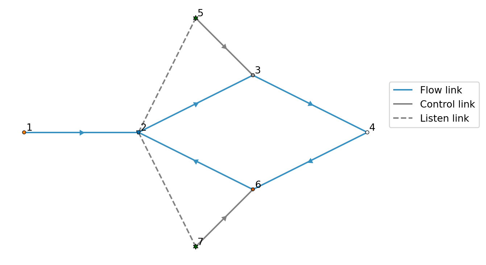
Write the model to a TOML and GeoPackage:
datadir = Path("data")
model.write(datadir / "pid_control/ribasim.toml")PosixPath('data/pid_control/ribasim.toml')Now run the model.
run_ribasim(datadir / "pid_control/ribasim.toml")┌ Info: Starting a Ribasim simulation at 2026-02-02T10:58:16.493.
│ toml_path = "data/pid_control/ribasim.toml"
│ ribasim_version = "2026.1.0-rc1"
│ starttime = 2020-01-01T00:00:00
│ endtime = 2020-12-01T00:00:00
└ threads = 1
Simulating 0%| | ETA: N/A
Simulating 2%|▋ | ETA: 0:00:00
Simulating 4%|█▌ | ETA: 0:00:00
Simulating 6%|██▍ | ETA: 0:00:00
Simulating 8%|███▍ | ETA: 0:00:00
Simulating 11%|████▌ | ETA: 0:00:00
Simulating 16%|██████▎ | ETA: 0:00:00
Simulating 20%|████████▏ | ETA: 0:00:00
Simulating 25%|██████████▏ | ETA: 0:00:00
Simulating 31%|████████████▌ | ETA: 0:00:00
Simulating 37%|██████████████▊ | ETA: 0:00:00
Simulating 42%|████████████████▊ | ETA: 0:00:00
Simulating 47%|██████████████████▉ | ETA: 0:00:00
Simulating 53%|█████████████████████ | ETA: 0:00:00
Simulating 57%|██████████████████████▉ | ETA: 0:00:00
Simulating 63%|█████████████████████████▏ | ETA: 0:00:00
Simulating 70%|███████████████████████████▉ | ETA: 0:00:00
Simulating 77%|██████████████████████████████▊ | ETA: 0:00:00
Simulating 86%|██████████████████████████████████▌ | ETA: 0:00:00
Simulating 96%|██████████████████████████████████████▌ | ETA: 0:00:00
Simulating 100%|████████████████████████████████████████| Time: 0:00:00
[ Info: Computation time: 172 milliseconds
[ Info: The model finished successfully at 2026-02-02T10:58:19.808.After running the model, read back the results:
from matplotlib.dates import date2num
df_basin = pd.read_feather(datadir / "pid_control/results/basin.arrow")
df_basin_wide = df_basin.pivot_table(
index="time", columns="node_id", values=["storage", "level"]
)
ax = df_basin_wide["level"].plot()
ax.set_ylabel("level [m]")
# Plot target level
level_demands = model.pid_control.time.df.target.to_numpy()[:4]
times = date2num(model.pid_control.time.df.time)[:4]
ax.plot(times, level_demands, color="k", ls=":", label="target level")
pass
4 Polder/Boezem water management with allocation
Situation description: This example demonstrates a typical Dutch polder and boezem (storage basin) system that uses allocation to maintain target water levels under varying hydrological conditions. The model includes two polder basins at different elevations and two connected boezem basins, with controlled flows between them.
In the Netherlands, polders are low-lying areas protected by dikes, typically with water levels maintained below the surrounding area. The boezem is a higher water system that collects water from multiple polders and manages water distribution. This hierarchy requires careful water management through pumps, outlets, and controlled structures.
Model approach: The model uses Ribasim’s allocation feature to intelligently manage water distribution during both wet and dry seasons. The system experiences:
- Wet periods (days 1-90 and 180-270): Precipitation exceeds evaporation, requiring water removal from polders
- Dry periods (days 90-180 and 270-366): Evaporation exceeds precipitation, requiring water supply to maintain target levels
Setup the model with allocation enabled:
from ribasim.nodes import (
flow_demand
)
model = Model(
starttime="2020-01-01",
endtime="2021-01-01",
crs="EPSG:4326",
experimental=Experimental(allocation=True),
)Create time-varying precipitation and evaporation patterns:
time = pd.date_range(model.starttime, model.endtime)
day_of_year = time.day_of_year.to_numpy()
precipitation = np.zeros(day_of_year.size)
precipitation[0:90] = 1e-6
precipitation[90:180] = 0
precipitation[180:270] = 1e-6
precipitation[270:366] = 0
evaporation = np.zeros(day_of_year.size)
evaporation[0:90] = 0
evaporation[90:180] = 1e-6
evaporation[180:270] = 0
evaporation[270:366] = 1e-6Setup the basins with identical profiles and forcing:
basin_data = [
basin.Profile(area=[0.01, 1000000.0], level=[-10, 2.0]),
basin.Time(
time=time,
drainage=0.0,
potential_evaporation=evaporation,
infiltration=0.0,
precipitation=precipitation,
),
basin.State(level=[0.9]),
]
basin3 = model.basin.add(Node(3, Point(2.0, 0.0), name="Boezem"), basin_data)
basin4 = model.basin.add(Node(4, Point(2.0, 2.0), name="Polder"), basin_data)
basin6 = model.basin.add(Node(6, Point(4.0, 2.0), name="Polder"), basin_data)
basin9 = model.basin.add(Node(9, Point(4.0, 0.0), name="Boezem"), basin_data)The key to this model is using LevelDemand nodes to specify target levels for each polder and the boezem. The allocation algorithm will automatically determine required flows:
# Level demand on polder 4: maintain exactly 1.0 m
level4 = model.level_demand.add(
Node(100, Point(2.0, 2.5), name="polder#4 level demand"),
[level_demand.Static(min_level=[1.0], max_level=[1.0], demand_priority=[1])],
)
# Level demand on polder 6: maintain exactly 0.9 m
level6 = model.level_demand.add(
Node(101, Point(4.0, 2.5), name="polder#6 level demand"),
[level_demand.Static(min_level=[0.9], max_level=[0.9], demand_priority=[1])],
)
# Level demand on boezem 3: maintain 1.2 m
level3 = model.level_demand.add(
Node(102, Point(2.0, -1), name="boezem#3 level demand"),
[level_demand.Static(min_level=[1.2], max_level=[1.2], demand_priority=[1])],
)
# Set initial boezem levels to 1.2m
model.basin.state.df.loc[model.basin.state.df.node_id==3, 'level'] = 1.2
model.basin.state.df.loc[model.basin.state.df.node_id==9, 'level'] = 1.2
model.link.add(level4, basin4)
model.link.add(level6, basin6)
model.link.add(level3, basin3)Setup level boundaries representing external water systems:
level_boundary11 = model.level_boundary.add(
Node(11, Point(0, 0)), [level_boundary.Static(level=[10])]
)
level_boundary17 = model.level_boundary.add(
Node(17, Point(6, 0)), [level_boundary.Static(level=[0.9])]
)Setup outlets with allocation control. Note control_state="Ribasim.allocation" which tells the allocation algorithm to control these nodes:
# Inlet from boezem to polder 4
outlet5 = model.outlet.add(
Node(5, Point(2, 1), name="inlaat"),
[
outlet.Static(
control_state="Ribasim.allocation",
flow_rate=[0.0],
max_flow_rate=5.0,
)
],
)
# Bidirectional flow between polders
outlet13 = model.outlet.add(
Node(13, Point(3, 2), name="inlaat/uitlaat"),
[
outlet.Static(
control_state="Ribasim.allocation",
flow_rate=[0.0],
max_flow_rate=5.0
)
],
)
# Allocation-controlled outlets for water balance management
outlet10 = model.outlet.add(
Node(10, Point(5.0, 0.0)),
[outlet.Static(
control_state="Ribasim.allocation",
flow_rate=[0.0],
max_flow_rate=10
)],
)
outlet12 = model.outlet.add(
Node(12, Point(1.0, 0)),
[outlet.Static(
control_state="Ribasim.allocation",
flow_rate=[0.0],
max_flow_rate=10.0)],
)Setup a pump controlled by allocation for removing excess water:
pump7 = model.pump.add(
Node(7, Point(4, 1), name="drainage pumping station"),
[
pump.Static(
control_state="Ribasim.allocation",
flow_rate=[0.0],
max_flow_rate=20.0,
)
],
)Add a flushing demand (water quality management) during day 90-180:
t = pd.date_range(model.starttime, model.endtime, freq="D")
d = np.zeros(len(t))
d[90:180] = 1.5
pump7_alloc = model.flow_demand.add(
Node(70, Point(5.0, 1), name="flush=1.5m3/s"),
[
flow_demand.Time(
time=t,
demand_priority=[2] * len(t),
demand=d,
)
],
)
model.link.add(pump7_alloc, pump7)Setup Manning resistance to model open channel flow. The route_priority=0 ensures this is the main water route:
manning_resistance2 = model.manning_resistance.add(
Node(2, Point(3, 0.0), route_priority=0),
[
manning_resistance.Static(
length=[900], manning_n=[0.04], profile_width=[6.0], profile_slope=[3.0]
)
],
)Setup the links to connect all components:
model.link.add(level_boundary11, outlet12)
model.link.add(outlet12, basin3)
model.link.add(basin3, outlet5)
model.link.add(outlet5, basin4)
model.link.add(basin4, outlet13)
model.link.add(outlet13, basin6)
model.link.add(basin6, pump7)
model.link.add(pump7, basin9)
model.link.add(basin3, manning_resistance2)
model.link.add(manning_resistance2, basin9)
model.link.add(basin9, outlet10)
model.link.add(outlet10, level_boundary17)Let’s visualize the model structure:
model.plot()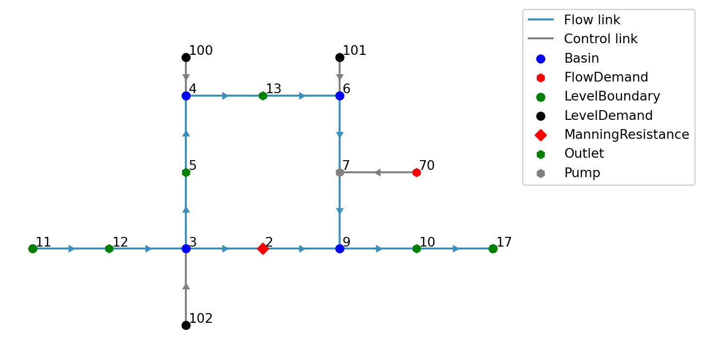
Write and run the model:
datadir = Path("data")
model.write(datadir / "polder_management/ribasim.toml")
run_ribasim(datadir / "polder_management/ribasim.toml")┌ Info: Starting a Ribasim simulation at 2026-02-02T10:58:21.425.
│ toml_path = "data/polder_management/ribasim.toml"
│ ribasim_version = "2026.1.0-rc1"
│ starttime = 2020-01-01T00:00:00
│ endtime = 2021-01-01T00:00:00
└ threads = 1
┌ Warning: The following experimental features are enabled: allocation
└ @ Ribasim /home/runner/work/Ribasim/Ribasim/core/src/logging.jl:53
Simulating 0%| | ETA: N/A
Simulating 4%|█▊ | ETA: 0:04:00
Simulating 25%|█████████▉ | ETA: 0:00:34
Simulating 47%|██████████████████▉ | ETA: 0:00:13
Simulating 64%|█████████████████████████▋ | ETA: 0:00:06
Simulating 85%|█████████████████████████████████▉ | ETA: 0:00:02
[ Info: Computation time: 11 seconds, 353 milliseconds
[ Info: The model finished successfully at 2026-02-02T10:59:22.418.Analyze the results - first look at basin levels:
df_basin = pd.read_feather(datadir / "polder_management/results/basin.arrow")
df_basin_wide = df_basin.pivot_table(
index="time", columns="node_id", values=["storage", "level"]
)
ax = df_basin_wide["level"].plot()
ax.axhline(y=1.0, color="red", linestyle="--", label="Polder 4 target")
ax.axhline(y=0.9, color="orange", linestyle="--", label="Polder 6 target")
ax.set_ylabel("level [m]")
ax.legend()
plt.show()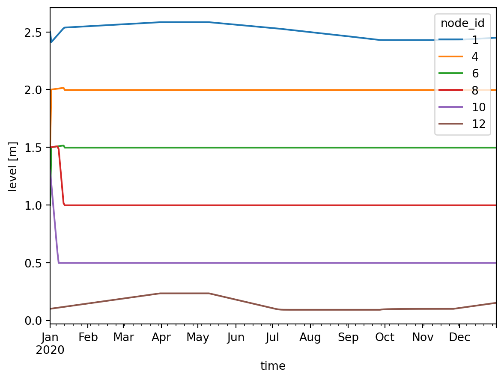
The plot shows how allocation maintains the polder target levels (1.0 m for basin 4, 0.9 m for basin 6) despite varying precipitation and evaporation.
Examine the flow rates managed by allocation:
df_flow = pd.read_feather(datadir / "polder_management/results/flow.arrow")
df_flow["link"] = list(zip(df_flow.from_node_id, df_flow.to_node_id))
df_flow["flow_m3d"] = df_flow.flow_rate
# Focus on allocation-controlled structures
controlled_links = [(3, 5), (4, 13), (6, 7)] # inlet, polder connection, pump
df_controlled = df_flow[df_flow["link"].isin(controlled_links)]
df_pivot = df_controlled.pivot_table(index="time", columns="link", values="flow_m3d")
ax = df_pivot.plot()
ax.set_ylabel("flow [m³/s]")
ax.legend(title="Link (from → to)", labels=["Boezem→Polder4", "Polder4→Polder6", "Polder6→Boezem"])
plt.show()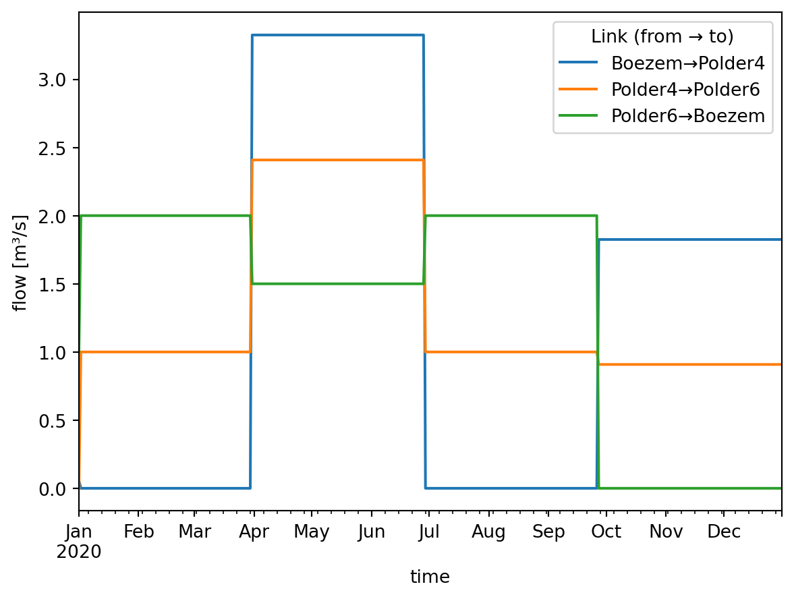
The allocation algorithm automatically:
- Supplies water during dry periods (positive flow through inlet)
- Removes excess water during wet periods (positive flow through pump)
- Transfers water between polders as needed
- Respects maximum flow rate constraints
- Prioritizes demands by priority level
5 Model with continuous control
model = Model(starttime="2020-01-01", endtime="2021-01-01", crs="EPSG:28992")Set up the transient level boundary:
model.level_boundary.add(
Node(1, Point(0, 0)),
[
level_boundary.Time(
time=pd.date_range(
start="2020-01-01", end="2021-01-01", periods=100, unit="ms"
),
level=6.0 + np.sin(np.linspace(0, 6 * np.pi, 100)),
)
],
)LevelBoundary #1Set up the linear resistance:
model.linear_resistance.add(
Node(2, Point(1, 0)), [linear_resistance.Static(resistance=[10.0])]
)LinearResistance #2Set up the basin:
model.basin.add(
Node(3, Point(2, 0)),
[
basin.Profile(area=10000.0, level=[0.0, 1.0]),
basin.State(level=[10.0]),
],
)Basin #3Set up the outlets:
model.outlet.add(Node(4, Point(3, 1)), [outlet.Static(flow_rate=[1.0])])
model.outlet.add(Node(5, Point(3, -1)), [outlet.Static(flow_rate=[1.0])])Outlet #5Set up the terminals:
model.terminal.add(Node(6, Point(4, 1)))
model.terminal.add(Node(7, Point(4, -1)))Terminal #7Set up the continuous control:
model.continuous_control.add(
Node(8, Point(2, 1)),
[
continuous_control.Variable(
listen_node_id=[2],
variable="flow_rate",
),
continuous_control.Function(
input=[0.0, 1.0],
output=[0.0, 0.6],
controlled_variable="flow_rate",
),
],
)
model.continuous_control.add(
Node(9, Point(2, -1)),
[
continuous_control.Variable(
listen_node_id=[2],
variable="flow_rate",
),
continuous_control.Function(
input=[0.0, 1.0],
output=[0.0, 0.4],
controlled_variable="flow_rate",
),
],
)ContinuousControl #9This defines:
- A
ContinuousControlnode with ID 1, which listens to the flow rate of theLinearResistancenode with ID 1, puts that through the function \(f(x) = \max(0, 0.6x)\), and assigns the result to the flow rate of the node thisContinuousControlnode is controlling, which is defined by a (control) link; - A
ContinuousControlnode with ID 2, which listens to the flow rate of theLinearResistancenode with ID 1, puts that through the function \(f(x) = \max(0, 0.4x)\), and assigns the result to the flow rate of the node thisContinuousControlnode is controlling, which is defined by a (control) link.
model.link.add(model.level_boundary[1], model.linear_resistance[2])
model.link.add(model.linear_resistance[2], model.basin[3])
model.link.add(model.basin[3], model.outlet[4])
model.link.add(model.basin[3], model.outlet[5])
model.link.add(model.outlet[4], model.terminal[6])
model.link.add(model.outlet[5], model.terminal[7])
# Define which node is controlled by each continuous control node
model.link.add(model.continuous_control[8], model.outlet[4])
model.link.add(model.continuous_control[9], model.outlet[5])Let’s take a look at the model:
model.plot()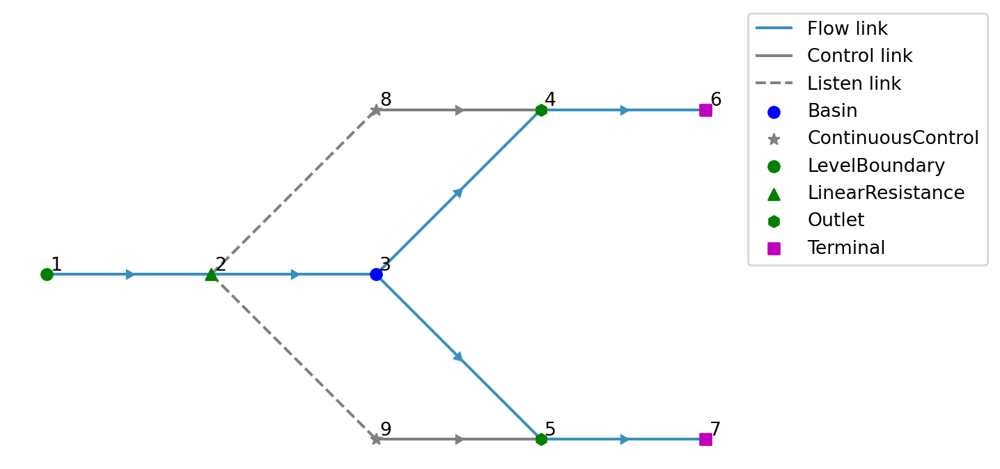
With this setup we want to split the flow coming into the basin into a 60% - 40% ratio.
Write the model to a TOML and GeoPackage:
toml_path = datadir / "outlet_continuous_control/ribasim.toml"
model.write(toml_path)PosixPath('data/outlet_continuous_control/ribasim.toml')Now run the model.
run_ribasim(toml_path)┌ Info: Starting a Ribasim simulation at 2026-02-02T10:59:23.678.
│ toml_path = "data/outlet_continuous_control/ribasim.toml"
│ ribasim_version = "2026.1.0-rc1"
│ starttime = 2020-01-01T00:00:00
│ endtime = 2021-01-01T00:00:00
└ threads = 1
Simulating 0%| | ETA: N/A
Simulating 1%|▌ | ETA: 0:00:01
Simulating 9%|███▊ | ETA: 0:00:00
Simulating 18%|███████▏ | ETA: 0:00:00
Simulating 25%|██████████▏ | ETA: 0:00:00
Simulating 35%|█████████████▉ | ETA: 0:00:00
Simulating 45%|██████████████████▏ | ETA: 0:00:00
Simulating 56%|██████████████████████▎ | ETA: 0:00:00
Simulating 65%|█████████████████████████▉ | ETA: 0:00:00
Simulating 76%|██████████████████████████████▎ | ETA: 0:00:00
Simulating 87%|██████████████████████████████████▋ | ETA: 0:00:00
Simulating 96%|██████████████████████████████████████▌ | ETA: 0:00:00
Simulating 100%|████████████████████████████████████████| Time: 0:00:00
[ Info: Computation time: 165 milliseconds
[ Info: The model finished successfully at 2026-02-02T10:59:27.316.After running the model, read back the results:
df_flow = pd.read_feather(datadir / "outlet_continuous_control/results/flow.arrow")
fig, ax = plt.subplots()
def plot_link_flow(from_node_type, from_node_id, to_node_type, to_node_id):
df_flow_filtered = df_flow[
(df_flow["from_node_id"] == from_node_id)
& (df_flow["to_node_id"] == to_node_id)
]
df_flow_filtered.plot(
x="time",
y="flow_rate",
ax=ax,
label=f"{from_node_type} #{from_node_id} → {to_node_type} #{to_node_id}",
)
plot_link_flow("LinearResistance", 1, "Basin", 1)
plot_link_flow("Basin", 1, "Outlet", 1)
plot_link_flow("Basin", 1, "Outlet", 2)
ax.set_ylabel("flow [m³s⁻¹]");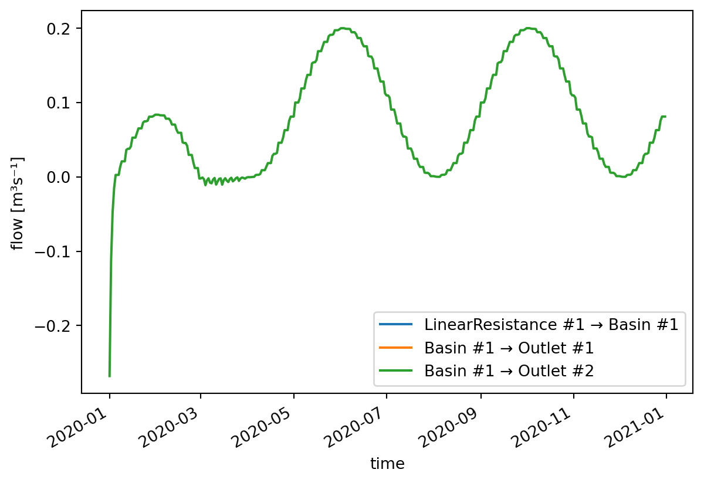